Crops are 460x460 at 1:1 from the 1600px delivery frames — no browser scaling, so this is the pixels that ship. Tier 2 is Real-ESRGAN x4 on the Tier 1 frame, resampled back to 1600px.
the red ZUKIN HALL lettering and brick
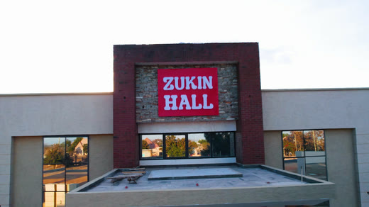
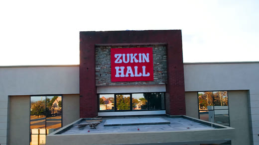
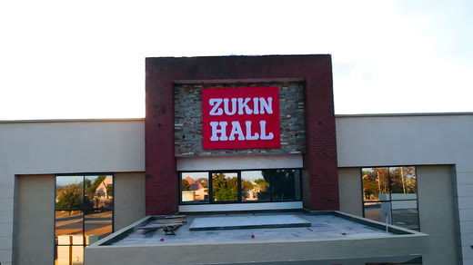
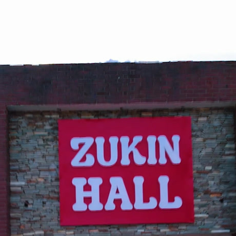
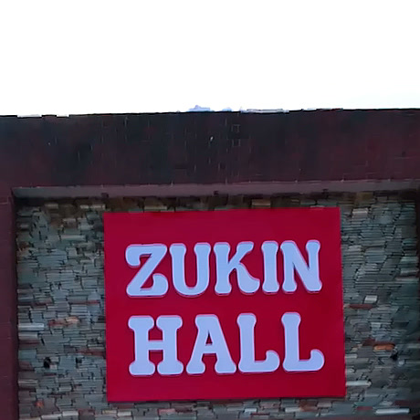
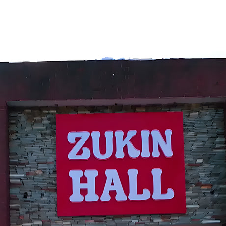
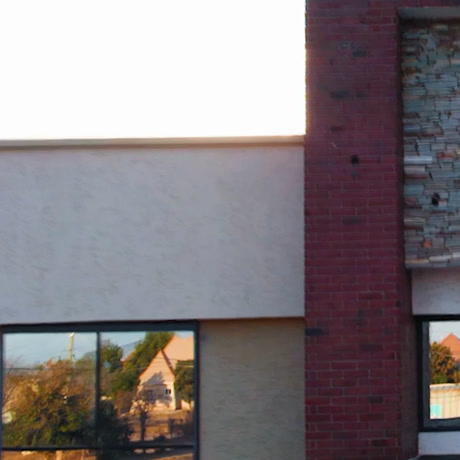
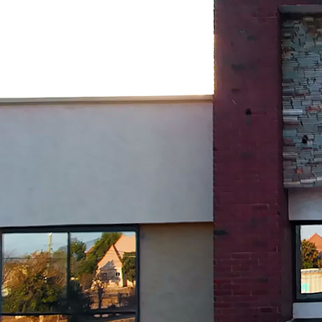
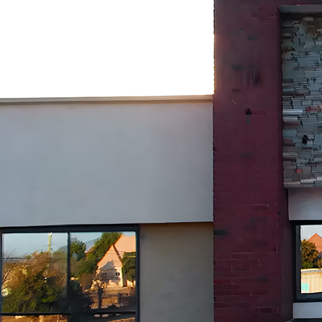
white flower arch, fine petal detail
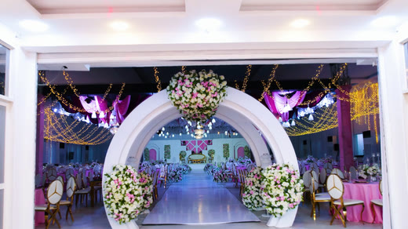
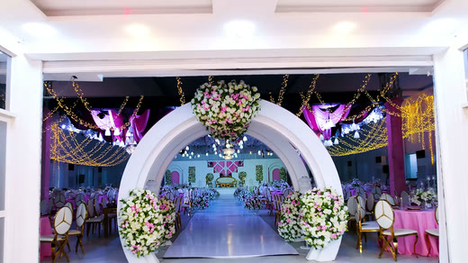
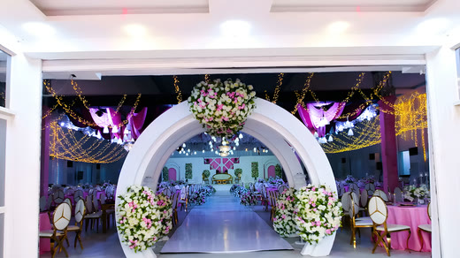
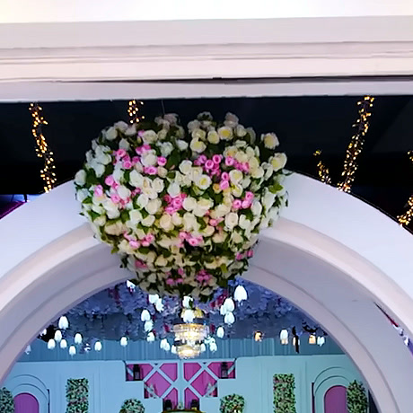
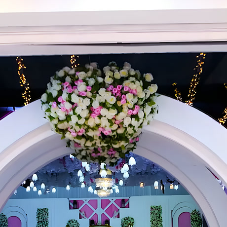
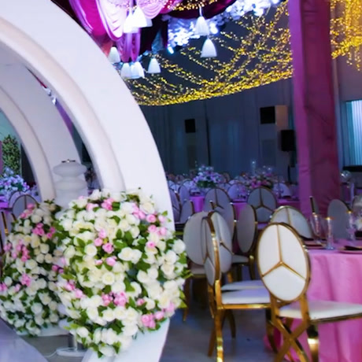
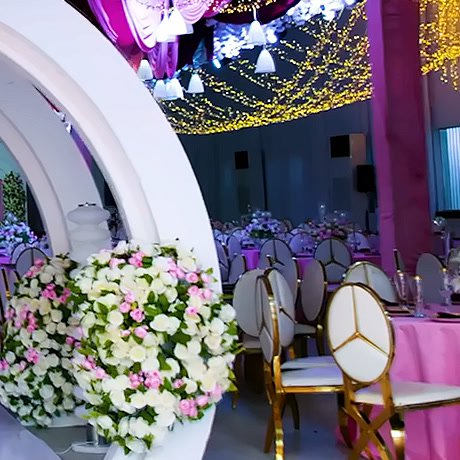
ceiling flowers and chair backs
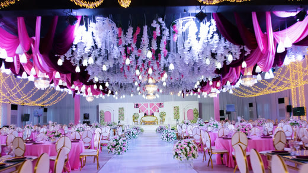
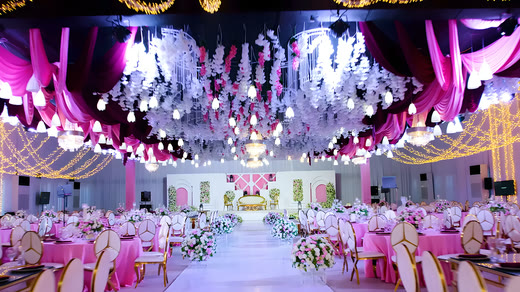
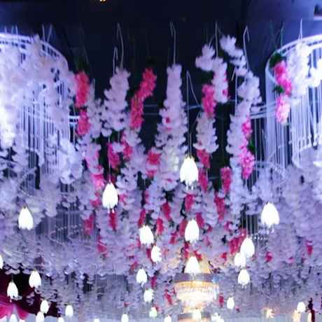
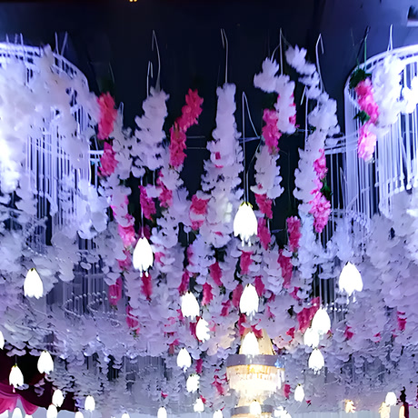
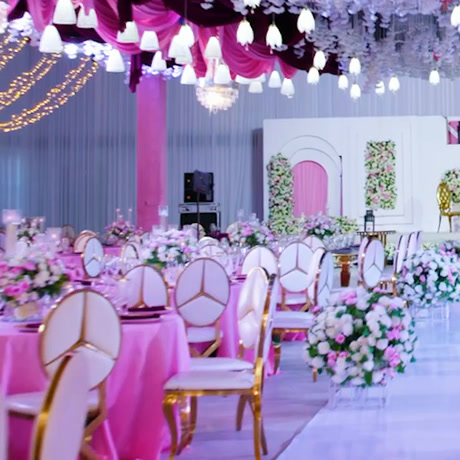
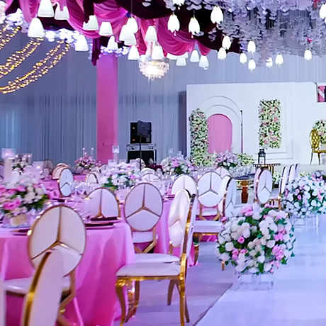
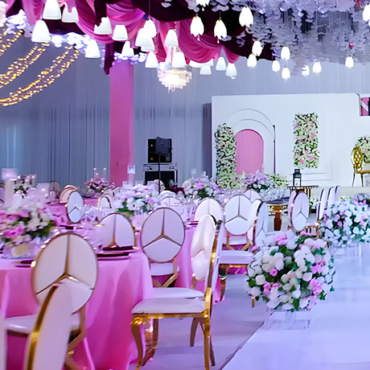
roof edge, render, distant buildings
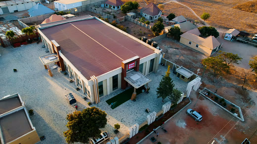
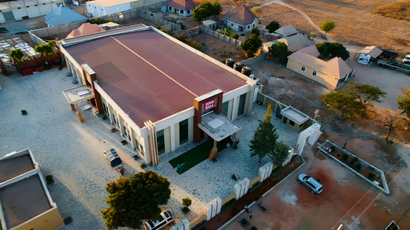
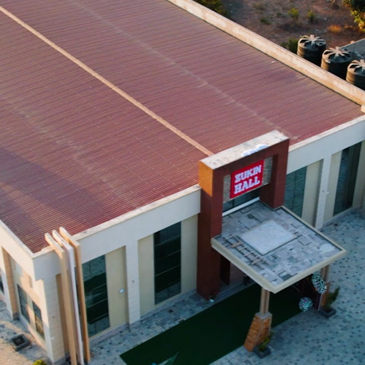
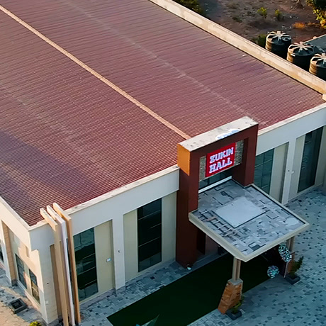
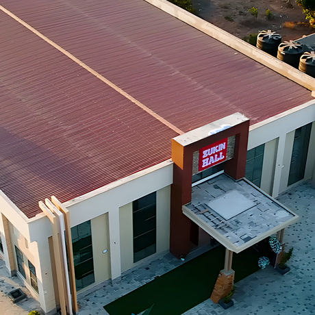
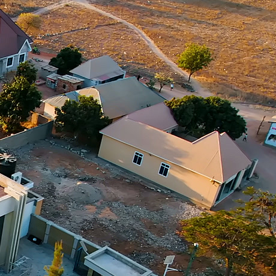
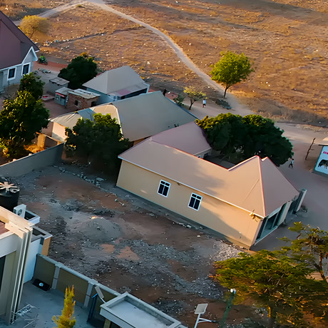